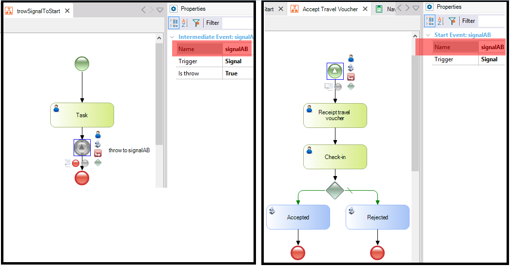

It indicates that the process is triggered when a signal is detected. This signal was broadcast communication from a business participant or another process. SymbolDescriptionThe trigger is a signal transmitted by another process. Signals have only one ID and are not sent to a predefined destination (broadcast). The Signals can operate within a process (for example, between a subprocess and its parent process) or among the processes of different participants. ExampleThe above picture provides an example where the first process throws a signal to start an "Accept Travel Voucher" process. This process will start when the signal is received and will evaluate the document for processing. Note that both signal events have the same name.  ScopeObjects: Business Process Diagram See Also
|
| Backlinks | |
| BPD Start Events | Toc:GeneXus BPM Suite |
| None Start Event in BPD |